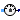
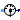
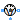
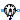
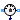

AC multiphase sensors
This package hosts sensors for quasi stationary multiphase circuits. Quasi stationary theory can be found in the references.
Extends from Modelica.Icons.SensorsPackage (Icon for packages containing sensors).
| Name | Description |
|---|---|
|  ReferenceSensor | Sensor of reference angle gamma |
|  FrequencySensor | Frequency sensor |
| PotentialSensor | Potential sensor |
|  VoltageSensor | Voltage sensor |
| VoltageQuasiRMSSensor | Continuous quasi voltage RMS sensor for multi phase system |
| CurrentSensor | Current Sensor |
| Continuous quasi current RMS sensor for multi phase system | |
| PowerSensor | Power sensor |
| Multiphase sensor to measure current, voltage and power | |
|  AronSensor | threephase Aron sensor for active power |
|  ReactivePowerSensor | threephase sensor for reactive power |
Sensor of reference angle gamma
This sensor can be used to measure the reference angle.
SinglePhase.Sensors.ReferenceSensor, FrequencySensor, PotentialSensor, VoltageSensor, VoltageQuasiRMSSensor, CurrentSensor, CurrentQuasiRMSSensor, PowerSensor, MultiSensor
Extends from Modelica.Electrical.QuasiStationary.MultiPhase.Interfaces.AbsoluteSensor (Partial potential sensor).
| Name | Description |
|---|---|
| m | number of phases |
| Name | Description |
|---|---|
| plug_p | Positive quasi-static polyphase plug |
| y | Reference angle |
Frequency sensor
This sensor can be used to measure the frequency of the reference system, using one single phase FrequencySensor.
SinglePhase.Sensors.FrequencySensor, ReferenceSensor, PotentialSensor, VoltageSensor, VoltageQuasiRMSSensor, CurrentSensor, CurrentQuasiRMSSensor, PowerSensor, MultiSensor
Extends from Interfaces.AbsoluteSensor (Partial potential sensor).
| Name | Description |
|---|---|
| m | number of phases |
| Name | Description |
|---|---|
| plug_p | Positive quasi-static polyphase plug |
| y |
Potential sensor
This sensor can be used to measure m complex potentials, using m single phase PotentialSensors.
SinglePhase.Sensors.PotentialSensor, ReferenceSensor, FrequencySensor, VoltageSensor, VoltageQuasiRMSSensor, CurrentSensor, CurrentQuasiRMSSensor, PowerSensor, MultiSensor
Extends from Interfaces.AbsoluteSensor (Partial potential sensor).
| Name | Description |
|---|---|
| m | number of phases |
| Name | Description |
|---|---|
| plug_p | Positive quasi-static polyphase plug |
| y[m] |
Voltage sensor
This sensor can be used to measure m complex voltages, using m single phase VoltageSensors.
SinglePhase.Sensors.VoltageSensor, ReferenceSensor, FrequencySensor, PotentialSensor, VoltageQuasiRMSSensor, CurrentSensor, CurrentQuasiRMSSensor, PowerSensor, MultiSensor
Extends from Interfaces.RelativeSensor (Partial voltage / current sensor).
| Name | Description |
|---|---|
| m | Number of phases |
| Name | Description |
|---|---|
| plug_p | Positive quasi-static polyphase plug |
| plug_n | Negative quasi-static polyphase plug |
| y[m] |
Continuous quasi voltage RMS sensor for multi phase system
This sensor determines the continuous quasi RMS
value of a multi phase voltage system, by averaging the phase RMS voltage phasors v.
V = sum({'abs'(v[k]) for k in 1:m})/m
ReferenceSensor, FrequencySensor, PotentialSensor, VoltageSensor, VoltageQuasiRMSSensor, CurrentSensor, CurrentQuasiRMSSensor, PowerSensor, MultiSensor
Extends from Modelica.Icons.RotationalSensor (Icon representing a round measurement device), Modelica.Electrical.QuasiStationary.MultiPhase.Interfaces.TwoPlug (Two plugs with pin-adapter).
| Name | Description |
|---|---|
| m | Number of phases |
| Name | Description |
|---|---|
| plug_p | Positive quasi-static polyphase plug |
| plug_n | Negative quasi-static polyphase plug |
| V | Continuous quasi average RMS of current |
Current Sensor
This sensor can be used to measure m complex currents, using m single phase CurrentSensors.
SinglePhase.Sensors.CurrentSensor, ReferenceSensor, FrequencySensor, PotentialSensor, VoltageSensor, VoltageQuasiRMSSensor, CurrentQuasiRMSSensor, PowerSensor, MultiSensor
Extends from Interfaces.RelativeSensor (Partial voltage / current sensor).
| Name | Description |
|---|---|
| m | Number of phases |
| Name | Description |
|---|---|
| plug_p | Positive quasi-static polyphase plug |
| plug_n | Negative quasi-static polyphase plug |
| y[m] |
 Modelica.Electrical.QuasiStationary.MultiPhase.Sensors.CurrentQuasiRMSSensor
Modelica.Electrical.QuasiStationary.MultiPhase.Sensors.CurrentQuasiRMSSensorContinuous quasi current RMS sensor for multi phase system
This sensor determines the continuous quasi RMS
value of a multi phase current system, by averaging the phase RMS current phasors i.
I = sum({'abs'(i[k]) for k in 1:m})/m
ReferenceSensor, FrequencySensor, PotentialSensor, VoltageSensor, VoltageQuasiRMSSensor, CurrentSensor, PowerSensor, MultiSensor
Extends from Modelica.Icons.RotationalSensor (Icon representing a round measurement device), Modelica.Electrical.QuasiStationary.MultiPhase.Interfaces.TwoPlug (Two plugs with pin-adapter).
| Name | Description |
|---|---|
| m | Number of phases |
| Name | Description |
|---|---|
| plug_p | Positive quasi-static polyphase plug |
| plug_n | Negative quasi-static polyphase plug |
| I | Continuous quasi average RMS of current |
Power sensor
This sensor can be used to measure m complex apparent power values, using m single phase PowerSensors.
SinglePhase.Sensors.PowerSensor, ReferenceSensor, FrequencySensor, PotentialSensor, VoltageSensor, VoltageQuasiRMSSensor, CurrentSensor, CurrentQuasiRMSSensor, MultiSensor
Extends from Modelica.Icons.RotationalSensor (Icon representing a round measurement device).
| Name | Description |
|---|---|
| m | number of phases |
| Name | Description |
|---|---|
| currentP | |
| currentN | |
| voltageP | |
| voltageN | |
| y |
Multiphase sensor to measure current, voltage and power
This multi sensor measures currents, voltages and instantaneous electrical power of a multiphase system and has separated voltage and current paths. The plugs of the voltage paths are pv and nv, the plugs of the current paths are pc and nc. The internal resistance of each current path is zero, the internal resistance of each voltage path is infinite.
SinglePhase.Sensors.MultiSensor ReferenceSensor, FrequencySensor, PotentialSensor, VoltageSensor, VoltageQuasiRMSSensor, CurrentSensor, CurrentQuasiRMSSensor, PowerSensor
Extends from Modelica.Icons.RotationalSensor (Icon representing a round measurement device).
| Name | Description |
|---|---|
| m | Number of phases |
| Name | Description |
|---|---|
| pc | Positive plug, current path |
| nc | Negative plug, current path |
| pv | Positive plug, voltage path |
| nv | Negative plug, voltage path |
| i[m] | Current as complex output signal |
| v[m] | Voltage as complex output signal |
| apparentPower[m] | Instantaneous apparent power as complex output signal |
| apparentPowerTotal | Sum of instantaneous apparent power as complex output signal |
threephase Aron sensor for active power
Contains 2 power meters (Modelica.Electrical.Analog.Sensors.PowerSensor) to measure total active power in a threephase system.
This device works only for sinusoidal voltages and currents in threephase systems without neutral.
Elmar Schrüfer, Leonhard Reindl, Bernhard Zagar: Elektrische Messtechnik. Carl Hanser Verlag.
Reinhard Lerch: Elektrische Messtechnik. Springer Vieweg.
Extends from Modelica.Icons.RotationalSensor (Icon representing a round measurement device).
| Name | Description |
|---|---|
| plug_p | |
| plug_n | |
| power | active power |
threephase sensor for reactive power
Contains 3 power meters (Modelica.Electrical.Analog.Sensors.PowerSensor) to measure total reactive power in a threephase system.
Thomas Mühl: Elektrische Messtechnik. Springer Vieweg.
Extends from Modelica.Icons.RotationalSensor (Icon representing a round measurement device).
| Name | Description |
|---|---|
| plug_p | |
| plug_n | |
| reactivePower | reactive power |